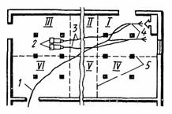

-

8(0152)31-25-61
-

kst@ggkst.by
-

http://ggkst.by
8(0152)31-25-61
kst@ggkst.by
http://ggkst.by
Карта 4: Устройство мастичных полов
Состав технологических операций. Нанесение шпатлевочного слоя; шлифовка поверхностности; нанесение выравнивающего слоя; нанесение лицевого слоя;
отделка покрытия.
Механизмы, инструменты, приспособления, инвентарь. Шлифовальная электрическая машина ИЭ-8201Б с гибким валом. Установка СО-21А. Вакуумно-щеточная
машина. Лещадь; шлифовальные круги средней зернистости; войлочные круги; гребок; флейцевая кисть; волосяная щетка; поролоновый валик с ванночкой; шпатель;
металлическая гладилка; фанерные щиты. Защитные очки; респиратор ШБ-1 «Лепесток»; резиновые перчатки.
Материалы. Поливинилацетатная шпатлевка из сухой растворной смеси марки 150, затворенная водным раствором поливинилацетатной дисперсии в
соотношении 1:4 в мас. ч. (дисперсия: вода) с добавлением пигментов; поливинилацетатные мастики для выравнивающего и лицевого слоев (табл. 1). Пентафталевый
лак ПФ-211 или смесь лаков пентафталевого ПФ-170 и масляно-смоляного С в соотношении 3:2.
Таблица 1.
Составы для устройства мастичных полов
| Компоненты | Состав, мас. ч. | ||
| шпатлевочный | лицевой | ||
| жесткий | пластичный | ||
| Поливинилацетатная дисперсия | 1 | 1 | 1 |
| Песок кварцевый мелкий | 4 | - | - |
| Песок молотый (маршаллит) | - | 1,8 | 0,8.0,9 |
| Щелочестойкие пигменты (железный сурик, охра, оксид хрома, ультрамарин) | 0,3…0,5 | 0,1...0,2 | 0,1…0,2 |
| Вода | 0,25…0,3 | 0,4 | 0,4 |
Схема организации рабочего места. Рабочее место организуют так, как показано на рис. 1. Площадь покрытия разделяют на захватки.
Рис. 1. Схема организации рабочего места при устройстве мастичных полов: 1 - шланг подачи мастики, 2 - компрессоры, 3 - воздушные шланги, 4 - форсунки, распыляющие мастику, 5 - границы захваток; (I - VI - последовательность работ на захватках
Последовательность выполнения технологических операций. К работе приступают при температуре воздуха в помещении не ниже 10°С и влажности
подстилающего слоя не более 5 %. Основание должно быть огрунтовано 10 %-ным водным раствором дисперсии ПВА.
Работу начинают со стороны, противоположной входу в помещение.
Нанесение шпатлевочного слоя. Через сутки после огрунтовки основание шпатлюют раствором, приготовленным из сухой растворной смеси марки 150, затворенной
25 %-ным водным раствором поливинилацетатной дисперсии.
Шпателем способом «на сдир» заделывают дефектные места приготовленным составом (см. табл. 1). После подсыхания заделанных мест на основание наносят шпатлевку
распылением с помощью установки СО-21А. К форсунке установки присоединяют материальный шланг от нагнетательного бачка, а воздушный - от компрессора.
После включения компрессора, когда давление в системе поднимается до 4 кПа, настраивают (регулируют) факел распыления. Регулируя соотношение подачи воздуха и
мастики, добиваются равномерного факела распыления мастики. Оптимальный диаметр факела 30...40 см. При настройке факела мастику сливают в ведро.
Шпатлевочный слой наносят от стены, противоположной входу в помещение, и ведут «на себя» параллельно границе захватки. Обрабатываемая полоса должна быть
шириной 1,5…2 м (рис. 2, а). Форсунку держат на 0,6…0,7 м выше основания и под углом примерно 60° (рис. 2, б). Мастику наносят ровным слоем толщиной 1…1,5 мм,
придавая распыляемому факелу вращательное движение.
Шлифовка поверхности. Через сутки затвердевший слой шпатлевки обрабатывают шлифовальной машиной с шлифовальными кругами средней зернистости. Шлам и пыль удаляют
подметальной вакуумно-щеточной машиной или пылесосом.
Рис. 2. Нанесение мастики (а) и положение распылителя во время работы (б)
В углах, пристенных зонах и других труднодоступных местах шлифовку выполняют вручную шлифовальным бруском.
Нанесение выравнивающего слоя. Перед нанесением мастики (не ранее чем за 2 ч) основание обеспыливают волосяной щеткой или пылесосом. Мастику наносят
установкой СО-21А в той же последовательности, что и шпатлевочный слой, слоем толщиной 2...2,5 мм.
Стены от брызг мастики защищают инвентарными щитами из фанеры или оргалита.
Выравнивающий слой мастики твердеет в течение 6…8 ч. Обнаруженные на поверхности трещины и впадины заделывают этой же мастикой, а бугорки,
наплывы срезают металлическим шпателем.
Нанесение лицевого слоя. Поверхность выравнивающего слоя обеспыливают, после чего приступают к нанесению лицевого покрытия.
Отрегулировав факел распыления сопла форсунки, мастику наносят от стены, противоположной входу в помещение.
Двигаясь вдоль полосы захватки, мастику наносят равномерным слоем толщиной 1,2...1,3 мм, производя кругообразные движения соплом форсунки.
Рис. 3. Отделка лицевого слоя лаком
При перерывах в работе вновь наносимый слой стыкуют с нахлестом 15...20 см на ранее уложенный.
Отделка лицевого слоя покрытия. По истечении 2…3 сут лицевое покрытие полируют войлочными или суконными кругами. Затем на лицевую поверхность за 2…3 раза
наносят пентафталевый лак ПФ-211 или смесь пентафталевого лака ПФ-170 с масляно-смоляным лаком 40 (в соотношении 3:2). Флейцевую кисть шириной 120 мм на
длинной ручке (рис. 3) опускают в емкость с лаком на 1…1,5 см и слегка отжимают о деревянную веселку, поставленную в ванночку (но не о край емкости).
Первый тонкий слой лака наносят в одном направлении, следующий - перпендикулярно первому.
Контроль качества. Поливинилацетатные бесшовные (мастичные) покрытия должны быть прочными, однородными, ровными; их лицевая поверхность не должна
иметь трещин, вздутий, шероховатости и других дефектов. Не допускается отслоение покрытий от нижележащего слоя (определяют простукиванием). Цвет лицевого
покрытия должен быть однотонным, без полос и вкраплений. Границы между участками, нанесенными в разное время, не должны быть заметны. Толщину наносимых слоев
постоянно контролируют проволочным калибром или щупом. Отклонения толщины элементов пола от проектной допускаются лишь в отдельных местах и не более 10 %
заданной толщины. При контроле ровности поверхности наложением двухметровой контрольной рейки во всех направлениях допускаемые отклонения не более 2 мм.
Трудовые затраты. Нормы времени, чел-ч (в числителе), на устройство 10 м2 мастичных полов и норма выработки на 1 чел-дн, м2 (в знаменателе),
следующие:
| Шпатлевание (за 1 раз): | |
| механизированным способом | 0,28/250 |
| вручную | 0,59/103,5 |
| Шлифование (за 1 раз): | |
| механизированным способом | 0,32/250 |
| вручную | 0,84/95 |
| Нанесение покрытий: | |
| механизированным способом | 0,78/102,5 |
| вручную | 1,8/44 |
Техника безопасности. В помещениях, где устраивают мастичные покрытия, должна работать побудительная вентиляция, рассчитанная на четырехкратный
обмен в час. Механизмы и аппараты для нанесения поливинилацетатных мастик перед пуском в работу должны быть проверены механиком, испытаны на давление,
превышающее рабочее не менее чем на 50 %. В ходе работ следят за манометром и предохранительными клапанами, не допуская превышения давления. Неисправными
механизмами и аппаратами пользоваться запрещается. Присоединяют и разъединяют шланги после прекращения подачи воздуха.
Перед работой со шлифовальной машиной ИЭ-8201Б с гибким валом необходимо убедиться в прочности крепления шлифовальных кругов. При нанесении мастик, шлифовании
покрытия нужно пользоваться респиратором и защитными очками.
Контрольные вопросы. Как регулируют факел распыления мастики? Из каких технологических операций состоит устройство
поливинилацетатных покрытий? Как сводят выравнивающий или лицевой слой «на нет» и как стыкуют слои мастики? Какими способами устраняют дефекты в промежуточных
прослойках поливинилацетатных покрытий? Назовите требования, предъявляемые к качеству лицевого покрытия мастичных полов. Как отделывают лицевое покрытие
мастичных полов? Перечислите правила техники безопасности при устройстве мастичных полов.
Глава 5 — Облицовка вертикальных поверхностей